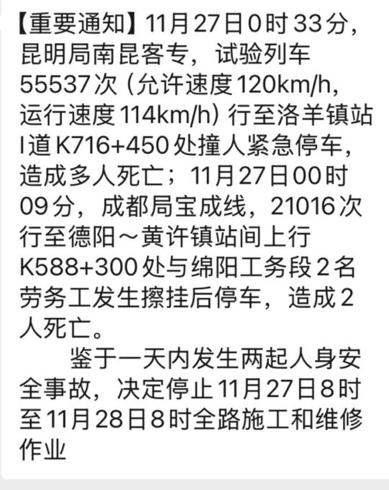
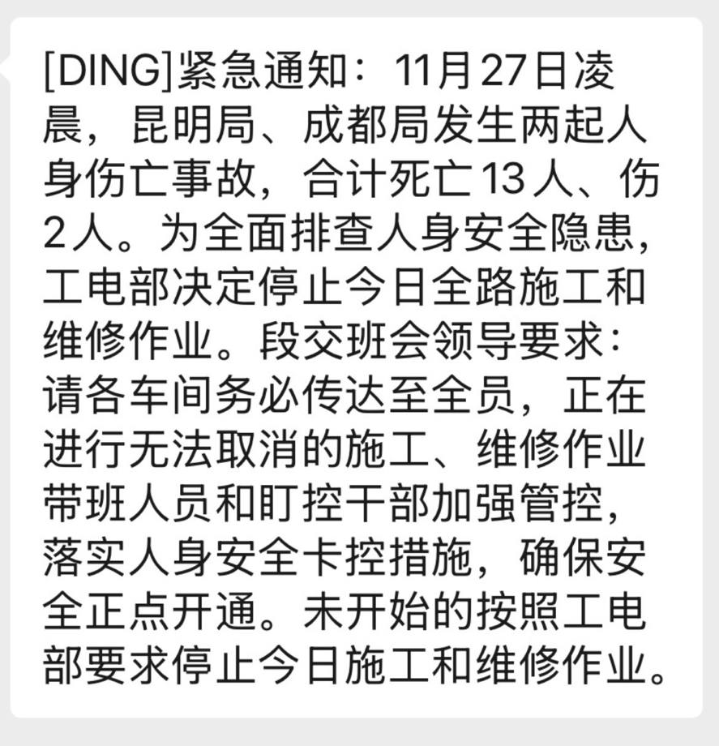

RedFox（2代目）
@FoxRed695449
@shiftzhm @zhu0588 粉红还真就是最大的支黑
毕竟死点人放14亿里就约等于没有嘛


李老师不是你老师
@whyyoutouzhele
11月27日，受中国铁路昆明局、成都局当日接连发生两起人员伤亡安全事故影响，各地紧急下发通知：自11月27日8时起至11月28日8时止，全国铁路立即停止一切施工和维修作业，全力开展安全大检查。 https://t.co/fVlCbOVjbn https://t.co/zls4wdK99a
灵魂浅唱
@shiftzhm
@zhu0588 哈哈出了这么一起 叫了快20年 殖畜们实在是找不到黑点了